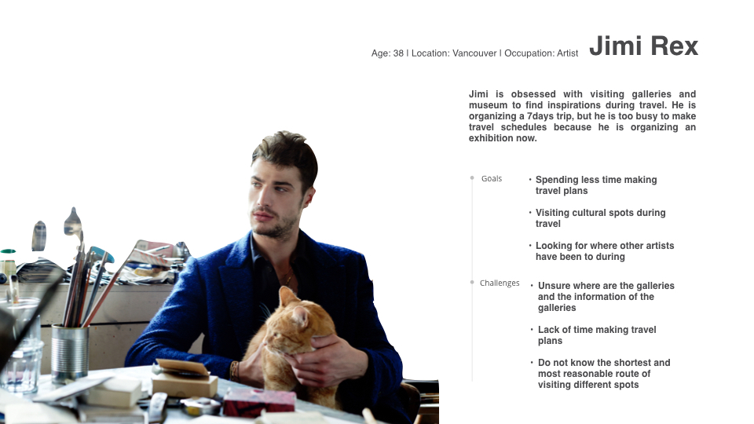
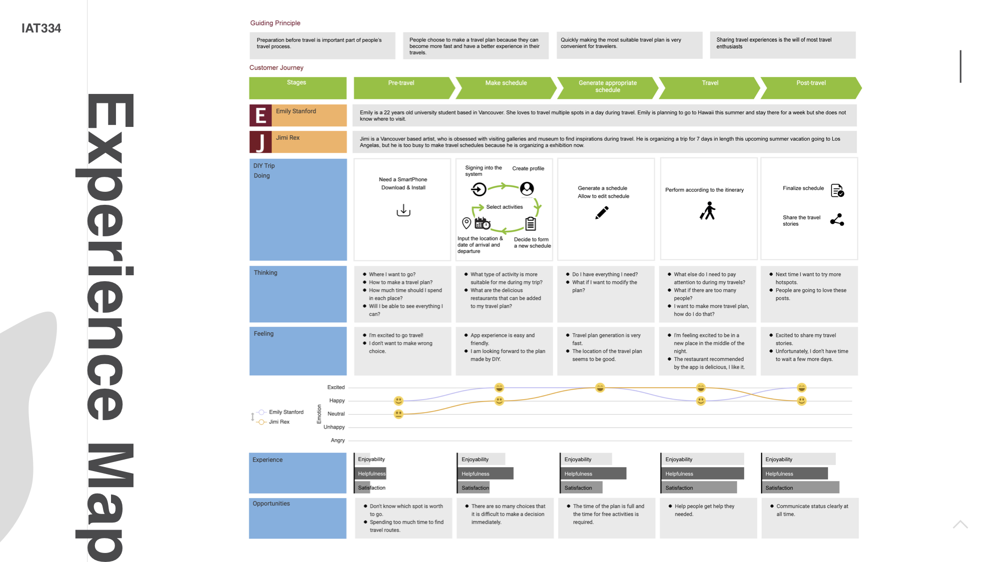

Project: DIY Travel

Design Brief
DIY travel is an app that makes travel plans for tourists. It can recommend tourist destinations and provide tourist strategies according to tourists' wishes.
Research
According to the research that the most stressful part of traveling to the destination was coping with weather conditions, traffic jams, and route finding.
The participants reported that the most stressful part of their trip was actually the trip planning stage, followed by traveling to the destination, and finally the actual stay at the destination.
Most people plan trips and take vacations to get away from the stress of home and work; however, very few people take travel stress into consideration. While traveling can indeed be an escape or break from the day-to-day routine, planning and taking a trip can also be quite stressful.
Ideation
Based on the above research, I create a journey map to explore how will the traverler experience with the help of the mobile app to finish their trip. First, the user will need to share some data to allow the app to give them the information they need, make choices based on their preferences, and finalize the schedule once the app has made a preliminary one. Therefore, we created persona to study user needs.
Based on this information, we created an experience map to help us summarize and analyze the problems that users may encounter when using our app
